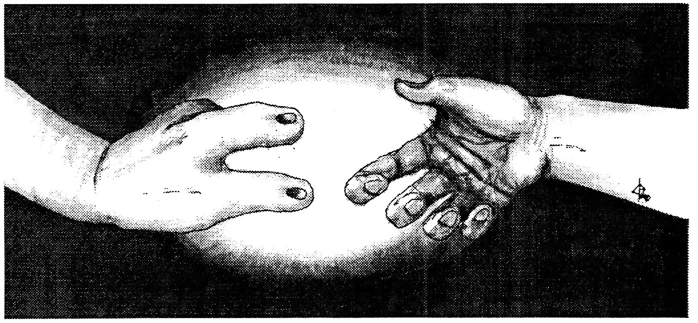
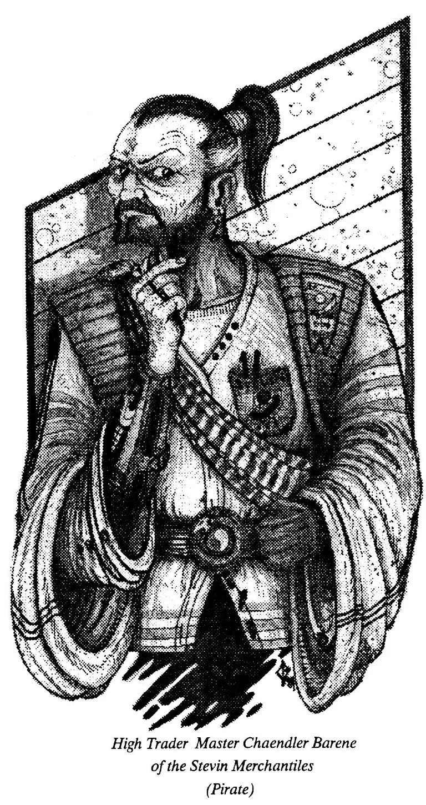

Up to 2017
The of the modern era can be traced back to the
beginning of the twentieth century, and the power
structure that emerged after World War I. The last few
hundred had sown the seeds of global thinking and
democratic ideals across the western world, resulting in
colonial empires and a redefining of the state in terms
of its people. This overextension abroad and
"undermining" at home weakened monarchies in
general. The devastation and overall collapse brought
about by the first world war shattered the old order
completely, however. The next century was a transitional
time spent trying to find a replacement to the system of
stability which had served for so long. No other period
has been marked by so much conflict. After the war, a
wide variety of diverse political and economic
ideologies were experimented with; Soviet communism,
German and Italian fascism, and even the first
suggestions of a global democratic League of Nations.
Old habits die hard, however, and in the tradition of
the old monarchs, the 1930s saw the rise of strong,
charismatic leaders in every major state. The tensions
already present from economic depression due to war
recovery and the stock market crash of 1929, were
inflamed by these leader's own vibrant
personalities and goals. Soon enough WWII erupted.
This one left Europe even more devastated than the
first, but it also created the world's first
superpowers, the United States and the Soviet Union.
They were the only allies that actually benefited in the
long run from the war. The war also discredited, at
least subconsciously, the merits of the strong leader
system once and for all. America emerged as the most
powerful nation on the planet and virtually recreated
the economies of western Europe and the Pacific. In the
next decades the world adopted a complex alliance-bloc
structure centering around the increasingly adversarial
superpowers, and lapsed into a standoff of pseudo
stability. For fifty years capitalist America and their
"natural" enemy communist Russia sparred off
through third world nations, the arms race,
technological achievements, and the propaganda and
rhetoric of the Cold War. The threat of nuclear
annihilation always loomed on the horizon, but this time
of tense "peace" gave many nations of the
world a chance to recoup. Finally, the superpower's
war economies exhausted themselves, and tensions were
broken in the interest of fiscal survival. The rest of
the globe, however, had grown further than a bilateral
system would allow, and the former superpowers receded
into the limelight. Later they would have to try hard
just to keep up with the new powerhouses in Europe and
the Asian Pacific. The emerging order was an extremely
intricate one. The nations of the world were
increasingly tied together through internationally
connected organizations, free trade blocs, multinational
corporations, agreements and understandings, but above
all by the coming of age of telecommunications. The
result was that for the first time a true sense of
global consciousness and culture emerged. The world no
longer moved because of the will of a few, but by the
mass will of millions. A change possibly due to the
surge of global democracy, the power of the consumer, or
the sheer interdependence of the whole system in
general. This period was also marked by more conflict
short of total war than any other period in history.
Incidents (some nuclear) included; the Chinese Civil
War, two Arab-Israeli wars, the India- Pakistan War, the
east African conflicts, ethnic violence in eastern
Europe and central Asia, the unprecedented use of
terrorism, along with numerous revolutions, coup
d'etats and uprisings. Although this was all
enhanced by a wave of pent up nationalism, most
people's horizons had been expanded to the point
where they thought themselves citizens of the globe.
Ultimately, this mood in the developed nations lead to
the formation of the first "superstate" in
2017.

2017-2068
The European Confederation is considered a landmark in political evolution, yet it did not come about overnight. There were over sixty years of solid negotiation and an entire millenium of history that lead up to it, step by step and not always with that particular goal in mind. It's success, however, provided a role model for other areas of the world. Most notably the reform of the United Nations through the 2020s, and for the Southeast Asian nations, who were already enjoying prosperity from economic and trade union earlier in the decade. Europe's Asian counterpart differed in several ways though. Through intense lobbying and use of the unique and respected positions which they held within their societies, huge Japanese, Korean, and China based conglomerates managed to guarantee corporate representation within the new legislature. Most of the past decades in these countries had largely been built around the new "samurai," and now they had grown so powerful, the transition to representing their markets appeared natural. The Europeans were wary of the idea, however, considering most of their dealings had been with American styled businesses. In 2025 the Middle East entered into its bloodiest and it's final war. Considering the region's history, the rest of the world grew tense. This was amplified by their dependance on Mid Eastern oil and gas at a time of dwindling reserves. As oilfield after oilfield was destroyed and incidents between interest factions and escorted tankers increased, UN peacekeeping troops were brought in. This served only to aggravate matters, being condemned by all sides. Finally, a week after an unfortunate UN incident on the Red Sea, a Saudi backed extremist group detonated a 6 kiloton nuclear device at the UN headquarters in New York. The blast killed thousands and leveled part of Manhattan. In response, the US, the European Community, and other nations including China and India, quickly mobilized against a threat perceived as increasingly unpredictable. Within three months they had forced an end to hostilities, but at a dreadful cost in lives; there had been liberal use of chemical and viral weapons, and 137 nuclear detonations. In all the conflict killed 16 million, and has come to be known as WWIII, or the Energy War. During the 2040s, the environment again became a concern in a way it hadn't since the end of the last century. Problems had begun to be recognized as early as the 1970s, unfortunately though it took decades for the political and economic will to appear and the results were beginning to take their toll. Acid rain formed in areas of the third world that burned the skin on contact. Modest rises in global sea levels due to melting from polar ice. Extreme and unseasonal weather, and rampant waste disposal problems. In some city's downtown cores health officials advised the use of oxygen masks. Probably most devastating though was the depleted ozone layer. Not only did it mean you couldn't go out into the sun unprotected, but it spelled disaster for many types of vegetation. The record number of crop failures through the 2040s and the hunger and starvation which resulted, occurred not only in the third world, but in the developed nation as well. Throughout the first half of the 21st century, various nations made all manner of technological and scientific advance, but the ones most relevant to modern life have to due with space exploration. Mankind's first visit to Mars was a joint expedition by all major space faring nations and occured in 2019. The team made many stunning discoveries and set up a temporary base which was used by other crews until a permanent colony could be constructed a decade later. Other space projects included the Asian-Third World solar power satellite program, the EuroAmerican lunar colonies and mining effort, the development of inexpensive chemical lift, and later on fusion rockets, and dozens of other probes and platforms by all nations. This all helped to secure mankind a permanent presence offworld, but above and beyond all other space achievements was the discovery in 2068 of extraterrestrial intelligence.
2068-2119
Contact with the Eebek was assuredly one of, if not the most important event in Human history. It answered the age old question, "are we alone?", but posed even deeper philosophical ones. Many religions and belief systems were in turmoil, and took many decades to accept the new reality, some continue to deny to this day. Initial contact between Eebek and Humans took place when a Bekian colony ship's ramjet was sighted beginning deceleration just beyond Neptune's orbit. As it turned out, the ten thousand or so colonists had travelled in cryostasis for over 70 years from nearby Tau Ceti, and were as surprised to see us as we were them. Although initial relations were slow, mainly due to the Eebek's unique method of communication, the majority of both species had a friendly curiosity about the other. Within a few years cultural and technological exchanges were taking place, and soon the colonists were allowed to settle under special UN status and security. The benefits of cooperation became clear with the theoretical development of Deltawarp in 2084. With this came the advent of early interstellar travel, allowing face to face contact with the Eeebek homeworld and the first trade ties. Coupled with a steadily growing friendship, this all culminated in the Eebek-Human Cooperative Alliance agreements of 2107, forming the foundations of what would come to be known as the First Sphere. Throughout earlier decades, the economic pillars of the globe, Europe and Southeast Asia, had slowly been webbing the other nations together unconsciously through vast multinational conglomerates known as megacorps. By them second world areas like Latin America, India, China, and the Mideast had been advanced to the first world, with the third following close behind. The nations of the globe as of 2070 consisted of 17 superstates entwined within several smaller regions and municipalities. This evolving socio-eco-political climate created a sense of unity (further stimulated by the arrival of the Eebek) which in 2083 allowed the formation of a World Parliament out of the old United Nations. Of course, this wasn't as easy as it sounds. A number of groups opposed the idea, including several nations, and for years newly formed Global forces were putting down attacks by reactionaries. Numerous guerrilla wars lasted into the United Earth's second decade, most notably in the American Midwest, Argentina, the Mideast and East Africa. The truth was though, no independent body could survive and within 22 years the Globe was complete. A trend also became evident about this time concerning the traditional philosophy of levels of government. Up until then it was the national, over the regional, over the civic level, each having its own local range of authority. What was emerging for beyond the 21st century, however, harkened back to ancient Greece and its city-states. The years of the 2080s and 90s were some of the most environmentally damaging ever. This combined with man's apparent inability to derive a cheap "quickfix" and the falling cost of spaceflight, prompted many to start what is known as the first exodus to the stars. While interstellar craft were still in the testing phases, several millions opted to settle on colonies on Mars and Luna or somewhere inbetween, to carve out a piece of the frontier for themselves. This helped get the first talk of terraforming started, and by 2119 there were over 4.3 million permanent extraterrestrial residents. 2119-2183 Under the United Earth, the coming decades were ones of peaceful prosperity. Science brought such wonders as gravity nullifiers, near sentient computers, the first skyhooks, and a range of genetically engineered products. While the outer solar system and other stars were explored for the first time with relative ease. It is tragic though that one of mankind's brightest periods should be the darkest for his environment. The Earth's population, which had peaked at 14.2 billion in 2097, was on the decline with inadequate food, shelter, and improper medical care endured by a quarter of the planet. Although technology largely buffered another half the planet from even worse, Earth had truly reached the ecological gutter. Sea levels had risen 6m due to melting polar caps and the collapse of the west Antarctic ice shelf. Climate belts had altered drastically, producing savage weather extremes and the most violent storms on record. Mass plant and animal extinctions resulted from the climatic shifts and were enhanced by a vanished ozone layer. The total loss will remain unknown, but it is estimated the environment took over 1.1 billion human lives during the 21st and 22nd centuries, with untold losses to the natural world. By 2134 corporate involvement in government had evolved to the point where it almost ran society, and why not? In many instances megacorps had more resources and better efficiency than entire branches of government. Within that year the World Parliament effectively became a cartel of massive companies in all but name. The power this gave global government was astounding, and many incredible projects were realized in the coming decades - including terraforming Terra. Unfortunately, while still highly democratic, this all came at a time when the old order was growing increasingly corrupt, and this extended into the corporate era. By the middle of the century, through intense propaganda and youth campaigns, free migration to the outworld colonies virtually stopped. By 2160 this resulted in a terribly insular generation. Most people didn't see beyond their own metroplex, and anything beyond Sol became a vast, mysterious resource supply meant for miners. The Eebek became distant to all but corporates, who still profited from their trade. For a while the endless security restrictions and mountains of bureaucracy became status quo. Eventually though, people began to hear about the 30 year Carakan War, and the entire race of Low Kaan being beaten into hiding for their planet's abundant mineral wealth. Many resented their government's "benevolence" and rebel resistance groups sprung up, aided by the newly discovered Eebek. During the 2170s Eebek merchants smuggled thousands offworld to begin their lives around another star. Finally though, the cartel itself grew so corrupt that factions began vying for total power. A number of small scale corporate wars were fought, but it all came down in 2183 with the Great People's Revolution.
2183-Present
The fall of corporate Earth was swift, but it's crash sounded for years. In the anarchy which followed, there was a mass exodus offworld that took tens of millions beyond the confines of the Solar system. The interim structure setup on Earth, meanwhile, received aid and financing from the Eebek. In 2186 they established the Poly Solar Foundation to stabilize humanity and give it a base from which it could regrow (later on this organization would come to represent the juncture of the Eebek-Human Alliance). Recognizing the limitations and shortcomings of representational democracy, the government which developed in the coming years evolved from the limited direct democracies which existed on a civic/regional level for the most of Earth's cities. By utilizing technology developed during the previous corporate era, city computers were upgraded and interconnected through regional and supranational networks. The computers reflected the goals and need of their populations, yet allowed individual people to make a major political and legislative decisions. This effectively recreated Pericles' Greece on a global scale, and finally buried the idea of the nation or supranational state. While presidents and prime ministers were now obsolete, citizens were still chosen to represent their city as figureheads. With no legal power, and only slight material benefits, these new mayors embodied the spirit that the populace felt their city should be represented by. They attracted business and sporting events, encouraged tourism and the like, yet held no set term; they were simply recalled when it was felt they were not up to snuff. These type of representatives were also selected for regional and global levels of interaction. The formal introduction of humanity to the other intelligent races within it's space, and the amazing discovery in 2212 of the vast so called "Second Sphere," led into a new age of cooperation and prosperity. The dismantling and regulation of large corporations after the fall spurred an explosion in small business entrepreneurship which continues to this day. The modern state of affairs is one told throughout history; one of conflict. Although nations no longer play the chess game of power, Earth's colonies do, and sponsored by Terran governments and corporations, they compete for territory, trade, technology, immigrants. However, with hundreds of colonies that vary as wildly as dictatorships, theocracies, corporates and monarchies, their exchanges can get quite colourful and sometimes violent. These many differences have spurred the growth of large interstellar organized crime rings, smugglers and pirate factions within the last decade. Additionally, there is the threat of the Thro, a vicious race encountered a few years ago against which all inhabited worlds are mobilizing. Although currently contained to three star systems, it's anyone's guess as to where the'll appear next. And finally there in the immense unexplored unknown of the Second Sphere. Remnants of an ancient and dissociated stellar empire, the second sphere offer information, races and technology beyond man's wildest dreams. Yet even though he's the new kid on the block, he's got a few things they don't, to bargain with.
This is truly the beginning.
